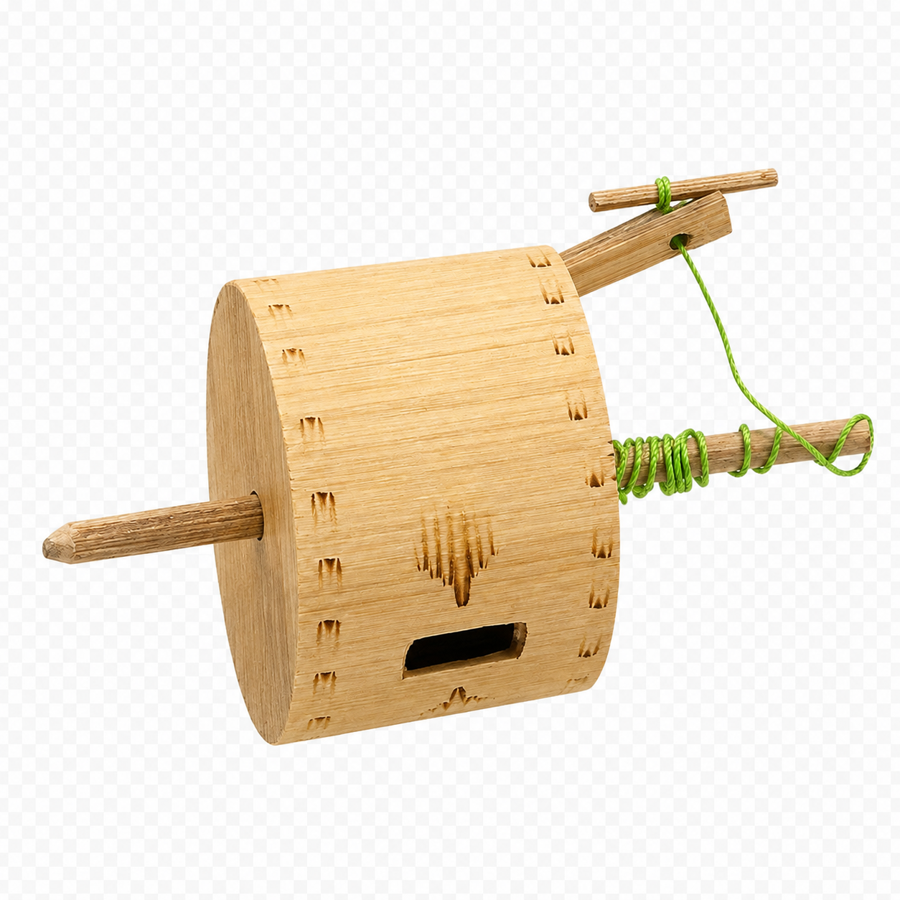
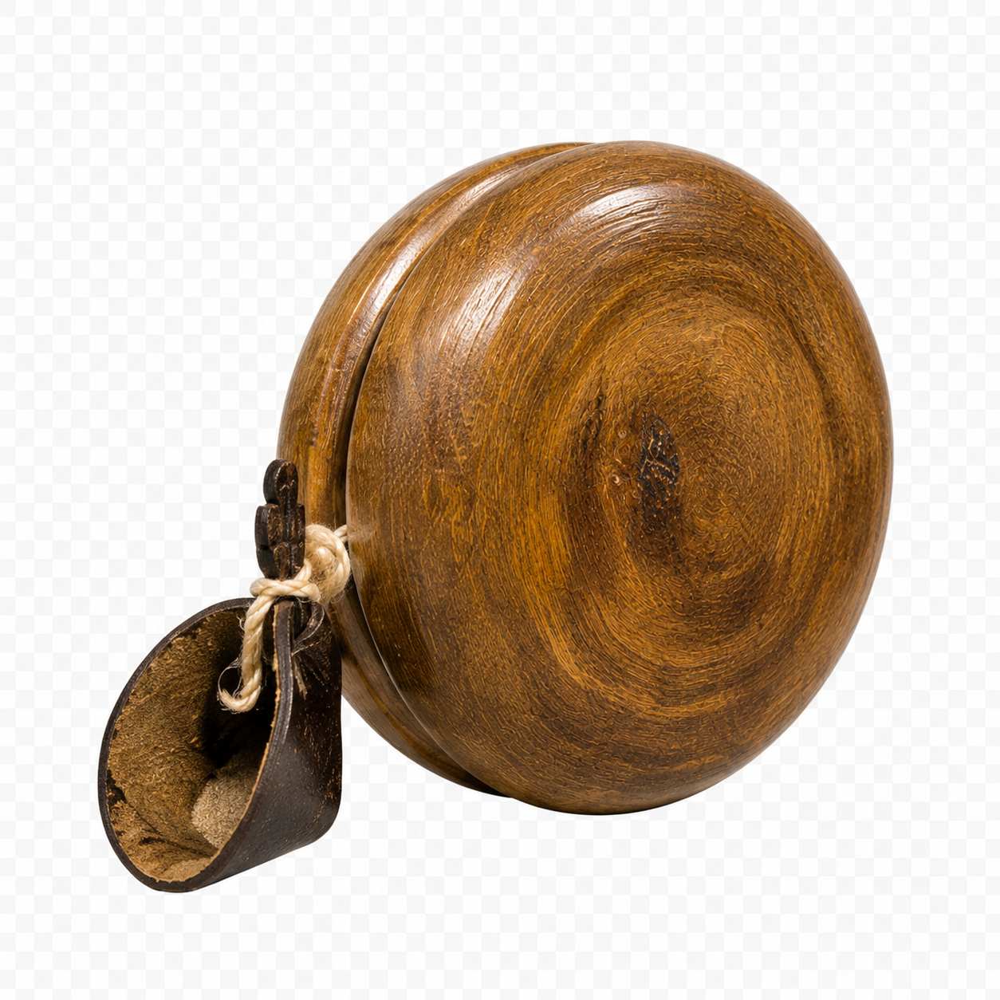
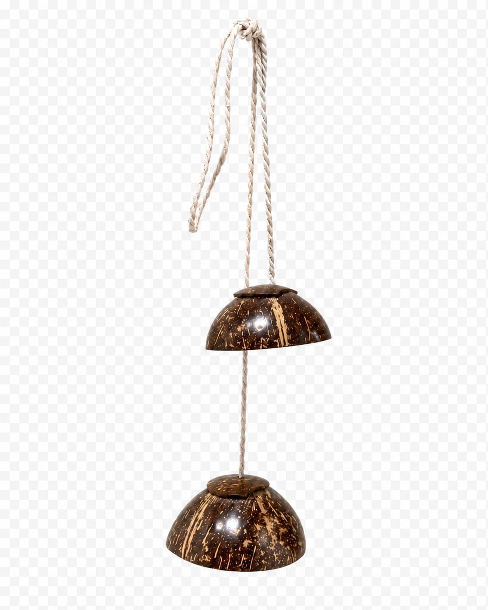

Total Koleksi
Museum Sonobudoyo Unit I · Yogyakarta
Museum Virtual
Alat Permainan Tradisional
Jelajahi objek permainan tradisional hasil observasi kelompok. Tampilan koleksi memakai asset gambar agar lebih ringan, sedangkan model 3D interaktif dibuka saat pengguna memilih tombol Lihat Model 3D. Setiap objek dilengkapi metadata, klasifikasi, dan informasi digitalisasi.



Koleksi Digital 3D
Koleksi Alat Permainan Tradisional
Tidak ada koleksi yang cocok dengan filter.
Asal Daerah
Kategori Bentuk
Model 3D
Tentang Digitalisasi
Museum virtual ini menghadirkan koleksi alat permainan tradisional hasil observasi kelompok agar dapat dinikmati siapa saja, kapan saja. Setiap objek ditampilkan lewat foto yang ringan dibuka, lengkap dengan informasi bahan, bentuk, fungsi, dan cara bermainnya.
Ingin melihat lebih dekat? Tekan tombol Lihat Model 3D pada koleksi untuk memutar objek dari segala sudut, seolah-olah memegangnya langsung. Lewat cara ini, warisan permainan tradisional tetap terjaga dan tetap dekat dengan generasi masa kini.